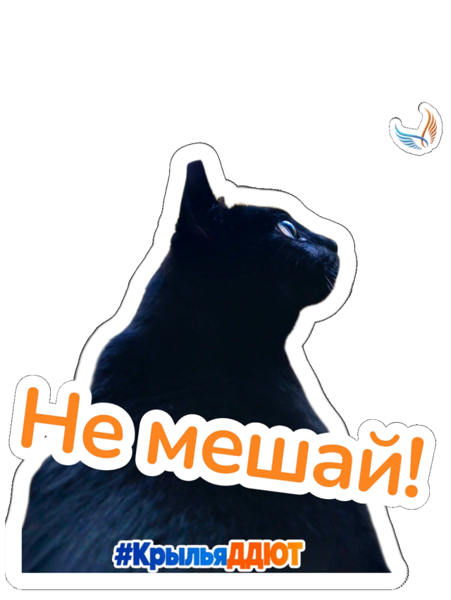

Экспортируем только готовую работу. В бесплатной версии: 100 экспортов в месяц, также действует лимит 25 в неделю. Сначала покажи стикер педагогу и исправь замечания. Сохранение картинки на телефон расходует лимит. Лимиты Photoroom
Сохрани заготовки из чата «Крылья дети»
Заранее скачай изображения хэштега #КрыльяДДЮТ и дополнительные элементы. В чате открой нужное изображение и сохрани его на телефон, чтобы затем выбрать через «Вставить».
Заготовки для оформления из чата · нажми, чтобы увеличитьВарианты заготовок хэштега из чата · нажми, чтобы увеличитьДополнительные значки для стикера · нажми, чтобы увеличить
Для своей работы выбери личную фотографию, где хорошо видно лицо или фигуру и понятна эмоция. В пошаговом примере педагог использует своего котика.
Собираем свой стикер
ОТ ФОТОГРАФИИ К СООБЩЕНИЮ
1
Открой прозрачный шаблон
В разделе «Классика» выбери медвежонка на клетчатом фоне с подписью «Прозрачный». Он выделен красным.
Выбери свою фотографию из галереи. Если приложение сначала предлагает «Начни с фото», выбери фотографию, затем шаблон «Прозрачный».
Медвежонок «Прозрачный» в разделе «Классика» · нажми, чтобы увеличить
2
Проверь удаление фона
Фон удаляется автоматически. Увеличь изображение и посмотри на края: на месте ли волосы, пальцы, одежда? При необходимости поправь вырезание через «Контур».
На скриншоте Android инструмент «Контур» со значком ножниц относится к вырезанию объекта. Белая обводка добавляется отдельно в настройках объекта.
Настройки выбранной фотографии; «Контур» и «Обрезать» · нажми, чтобы увеличить
3
Обработай и размести фотографию
Обрежь лишнее, подправь яркость, контраст и насыщенность в настройках изображения. Можно использовать другие подходящие инструменты.
Картинка должна хорошо различаться в маленьком размере. Не повышай все настройки до максимума: сохрани детали лица.
Сначала размести фотографию с запасом до краёв. Так белая обводка поместится со всех сторон.
Котик после удаления фона, до оформления · нажми, чтобы увеличить
4
Добавь белую обводку
Выдели фотографию, найди обводку объекта и выбери белый цвет. Настрой толщину, чтобы край был заметен, но не перекрывал важные детали.
Проверь все стороны: обводка нигде не должна обрезаться. При необходимости немного уменьши фотографию.
5
Выбери свободную фразу
Перейди к списку 40 фраз. Выбирать можно из любой подборки. Повторять уже занятую фразу нельзя.
Нажми на свободную фразу: она станет красной, появятся крестик и отметка «Занято». Повторное нажатие освобождает фразу.
Подбери фразу к своему изображению и ситуации, в которой этот стикер пригодится.
6
Оформи крупную надпись
Нажми «Текст», введи выбранную фразу без ошибок. Выбери шрифт, цвет и добавь белую обводку текста.
Надпись должна читаться на маленькой картинке. Длинную фразу можно перенести на несколько строк. Не закрывай лицо и важные детали.
Настройка обводки текста: размер и цвет · нажми, чтобы увеличить
7
Добавь хэштег и детали
Нажми «Вставить» и выбери сохранённую заготовку #КрыльяДДЮТ. Добавь обводку.
Хэштег меньше основной фразы, расположен в стороне, но хорошо читается. Дополнительные элементы можно использовать по желанию.
Собери композицию: первым зритель замечает героя и фразу. Декор помогает передать настроение.
Композиция с надписью, хэштегом и дополнительным элементом · нажми, чтобы увеличить
Выбираем без повторов
ФРАЗА ДЛЯ ТВОЕГО СТИКЕРА
Все четыре подборки доступны каждому. Нажми на свободную фразу, чтобы отметить её занятой.
Как работают отметки
Список сохраняет отметки только в этом браузере на этом устройстве. На телефонах детей они автоматически не обновляются. Для общего выбора отмечайте фразы на одном устройстве с выводом на общий экран. Повторное нажатие освобождает фразу.
Подборка 1
Подборка 2
Подборка 3
Подборка 4
Нажми на фразу: красная рамка и × означают «Занято». Отметки сохраняются только в этом браузере на этом устройстве.
Проверка маленьким размером
В ПЕРЕПИСКЕ ВСЁ МЕНЬШЕ

Уменьши пример и сравни его на двух фонах.
Что замечаешь первым? Читается ли надпись? Различим ли хэштег? Видно ли белую обводку?
Оставь стикер открытым на телефоне, вытяни руку и отодвинь экран от себя на удобное максимальное расстояние. Читаются ли надпись и хэштег? Понятен ли смысл стикера? Если текст теряется, сделай надпись крупнее или выбери более простой шрифт.
В интерактиве показан пример педагога, а твоя работа остаётся в Photoroom.
Редактор перед отправкой
ЧТО НУЖНО ИСПРАВИТЬ?
В каждой карточке выбери главную проблему. Пояснение появится после ответа.
Перед показом педагогу
ПРОВЕРЬ СВОЙ СТИКЕР
Проверено: 0 из 6
Покажи работу педагогу до экспорта. Если есть замечания, исправь их и покажи снова. Отметки в чек-листе не заменяют одобрение педагога.
После одобрения
СОХРАНИ И ПЕРЕДАЙ РЕЗУЛЬТАТ
Показ педагогу→Исправления и одобрение→Экспорт PNG→Чат «Крылья дети»
8
Нажми «Экспорт»
Выбери PNG и сохрани с прозрачным фоном. Открой сохранённый файл и проверь результат.
В чат «Крылья дети» прикрепи сам PNG-файл как файл/документ, чтобы сохранить прозрачность и качество. Не отправляй скриншот редактора.
Педагог сохранит работу и добавит её в стикерпак.
Если вместо прозрачности получился прямоугольный фон, вернись в проект и проверь фон и формат экспорта.
Кнопка «Экспорт» внизу редактора · нажми, чтобы увеличить